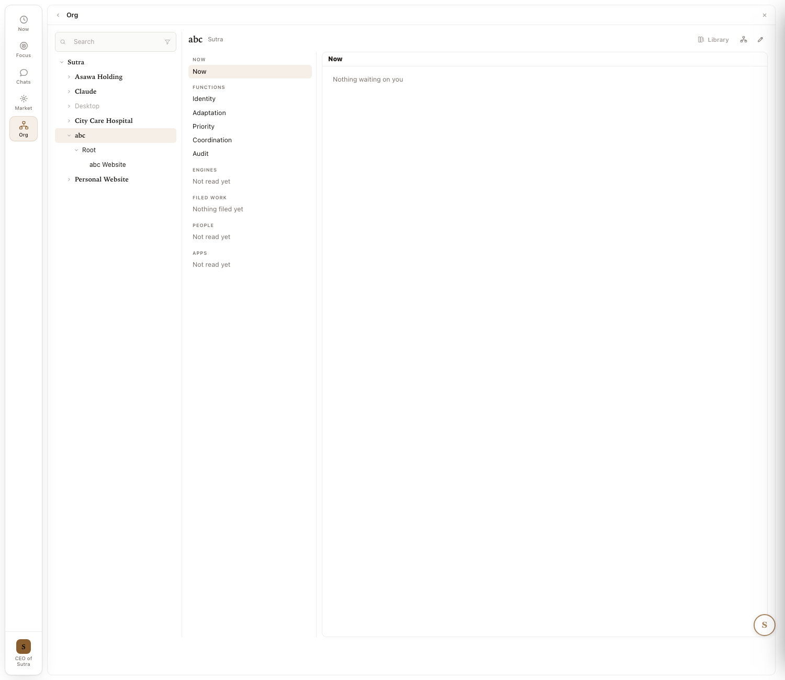
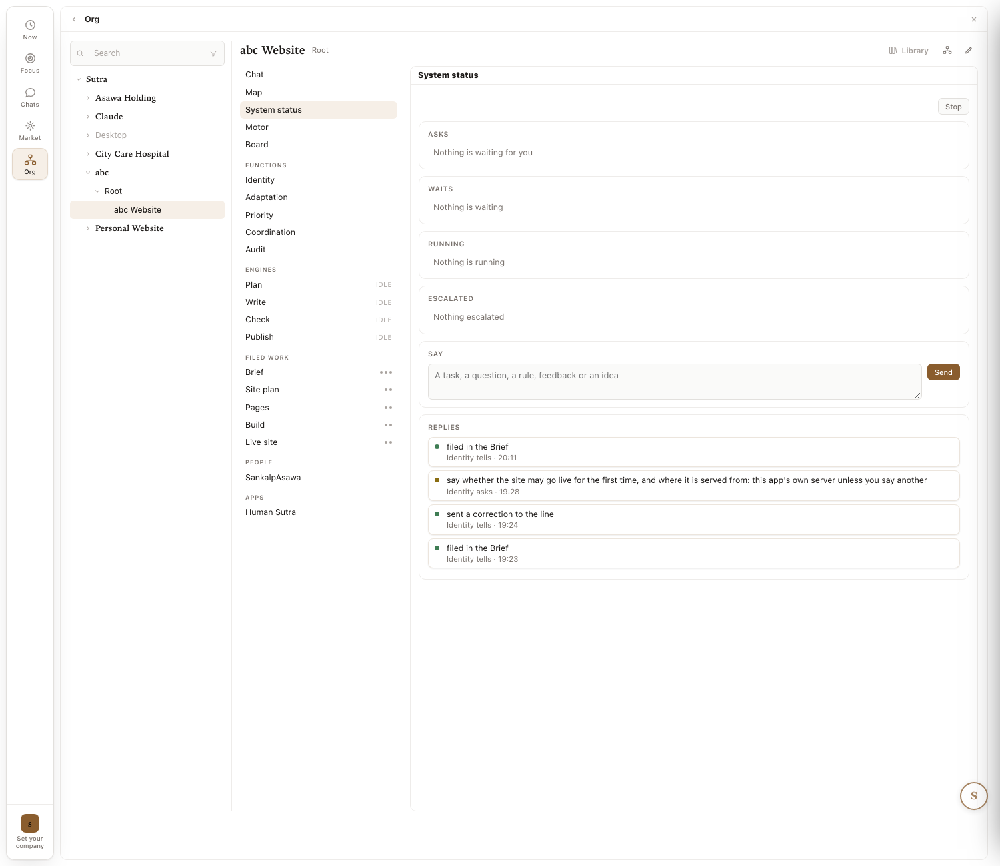
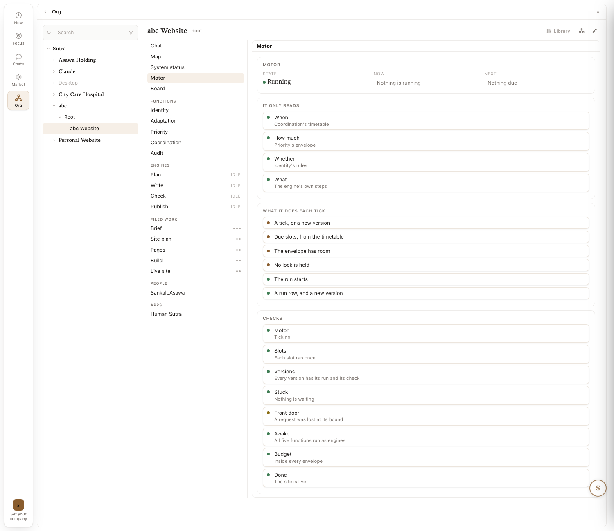
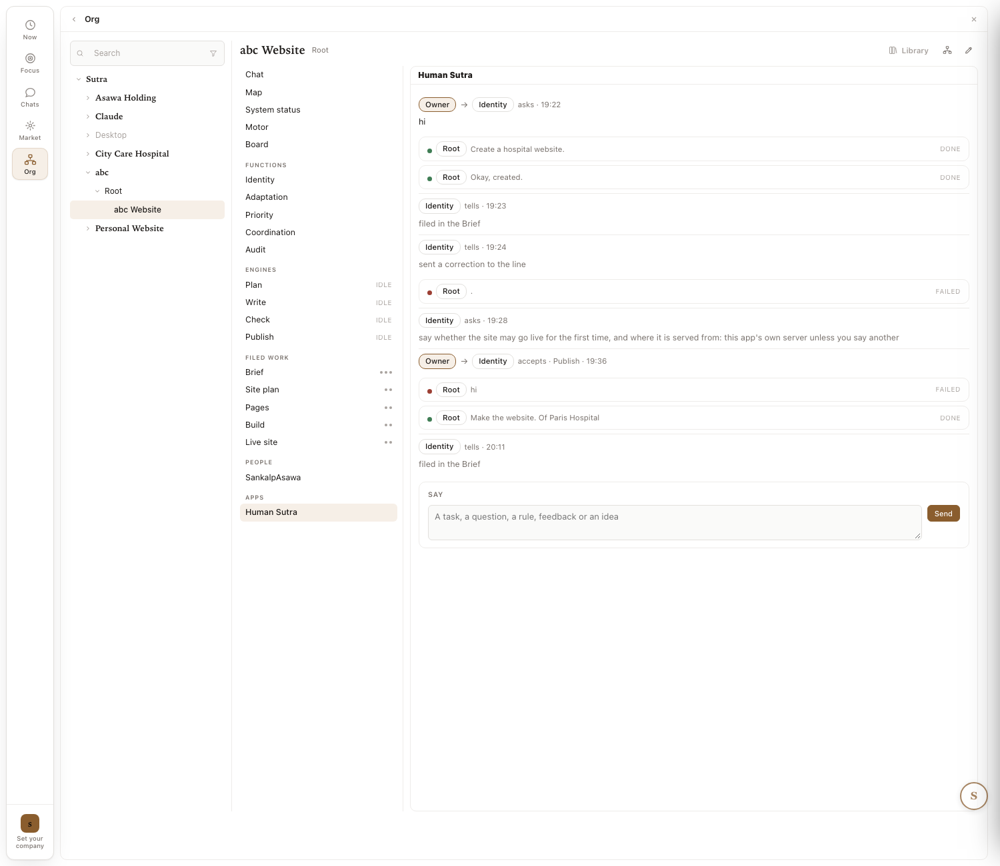
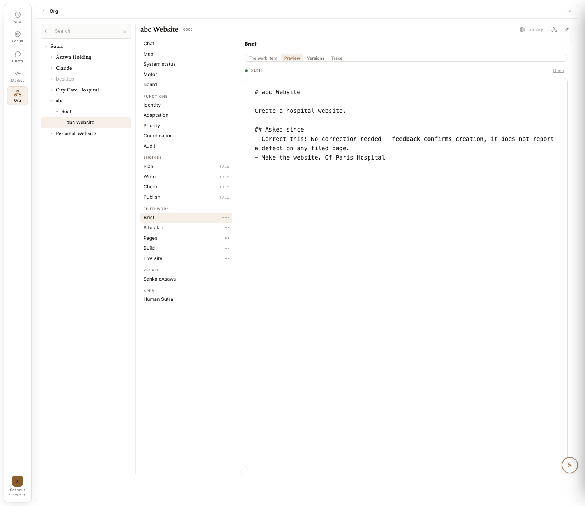

The department screens, cleaned up CLEANUP · zoom 4
The founder, 2026-09-29: no new structure; improve the elements of each department screen from the UI side; the organisation is a name over its Root and has no departments at its own level; clean up each screen first. Every screen of one department was captured on the running app and is listed below, element by element. Logic untouched; nothing built.
Marks: REMOVE RENAME MERGE KEEP FLAG (a bug seen in the capture, for a SIM row). Every mark is UI only. A mark that would touch the record says so.
Work-order header
| id | band / parent | status | version | owner |
|---|---|---|---|---|
| platform-model-department-screen | PLATFORM / platform-model-platform-journeys | DRAFT | v2 | claude, for the founder to rule |
0 · The tree and the organisation

The organisation abc selected. It gets a department's middle column (functions, engines, filed work, people, apps) with nothing in it, and a Now that says nothing is waiting.
On the record, an organisation has one Root; departments hang under Root, not under the organisation. So yes: the organisation is a name over its Root. The screen shows two rows, abc and Root, and gives abc a department screen it cannot fill.
| Element | Today | Cleanup | Logic |
|---|---|---|---|
| the rows abc and Root | two rows, one under the other | MERGE one row, abc; it opens Root's screen; the word Root is not shown | untouched: the record keeps organisation and Root |
| the organisation's screen | a department's chrome with "Not read yet", "Nothing filed yet" | REMOVE the empty groups; the organisation's screen is Root's chat and its departments | untouched |
| the rows Claude, Desktop (grey), Asawa Holding | registry roots beside the website organisations | FLAG which of these are organisations with a Root; the others out of this tree | the founder's call |
| the header "abc Website · Root" | the parent shown as Root | RENAME the parent as abc | untouched |
1 · Chat

| Element | Today | Cleanup | Logic |
|---|---|---|---|
| "Root handed to abc Website" lines | four of them; "filed in the Brief", "sent a correction to the line" | REMOVE once the department has answered; the first stays as one quiet "via Root" (SIM-3 f) | untouched: the turns stay in the record |
| the author of a turn | Root, for the department's own words | RENAME the department's name on its own turns | untouched: the turn carries the department already |
| the ask "say whether the site may go live..." | a plain line with "asks" after it | RENAME a card with its two buttons on it | untouched: Stamp and Refuse exist |
| the chip "to abc Website x" on the box | a removable chip and "Say it to abc Website" | KEEP; inside the department the chip is implied, so show it only on Root's box | untouched |
| the middle column, 22 rows | 5 tabs, 5 functions, 4 engines, 5 filed works, people, apps | MERGE into 6 rows: Chat, Map, Status, Work, Functions, Settings (see the summary) | untouched |
2 · Map

| Element | Today | Cleanup | Logic |
|---|---|---|---|
| the map itself | people, functions, work with versions, knows | KEEP; it is the best screen; the middle column repeats it | untouched |
| the legend, 9 items | function, engine, work, filed and checked, running, waiting, fault, hand-off, speaks to | REMOVE; the colours carry it; a hover names a shape | untouched |
| the crumb "abc Root › abc Website" | Root in the path | RENAME "abc › abc Website" | untouched |
| the On toggle and "Live site" | top right | KEEP; the same pair belongs on every tab's header, not only the Map | untouched |
3 · System status and Motor

System status: four empty groups, a Say box, Replies.

Motor: state, two explanatory blocks, eight checks.
| Element | Today | Cleanup | Logic |
|---|---|---|---|
| the two tabs | System status and Motor, each with a Stop or a state | MERGE into one tab, Status: state, now, next; asks, waits, running, escalated as four counts; the eight checks | untouched |
| "It only reads" and "What it does each tick" | ten rows of explanation | REMOVE; that is help text, and the product carries none | untouched |
| Say and Replies on System status | a second box and a second list of the same turns | REMOVE; the Chat has them | untouched |
| the eight checks | Motor, Slots, Versions, Stuck, Front door, Awake, Budget, Done | KEEP, under Status; "Front door: a request was lost at its bound" is amber | untouched |
4 · Board, and the Human Sutra app

The Board: the same turns, attributed to Root and Identity.

Human Sutra: the same turns a third time, with DONE and FAILED marks.
| Element | Today | Cleanup | Logic |
|---|---|---|---|
| three views of one conversation | Chat, Board, Human Sutra | MERGE into the Chat with one switch, "show the functions' exchanges"; the Board tab goes; the app stays in the Library | untouched: one record, two views is the rule; this is one view with a switch |
| the turn "Root . asks 19:25" | an empty turn, and on Human Sutra it is FAILED | FLAG an empty post reached the record; a SIM row | a fix, not a UI change |
| "Root hi FAILED" | a greeting sent as a task and failed | FLAG a greeting should be answered, not run; a SIM row | a fix |
5 · A function: Identity's chat, Priority's settings

Identity's chat: the step rows ("Gate the effect by rule, admit") between the turns.

Priority's settings: template, limit, ladder, starts, hears.
| Element | Today | Cleanup | Logic |
|---|---|---|---|
| the step rows in a function's chat | "Read the request, code", "Gate the effect by rule: admit", eight per turn | MERGE into one folded line per turn, "6 steps", opened on click; the function's own words stay (SIM-3 c) | untouched |
| the three tabs per function | Identity, Chat, Settings | RENAME the first tab About; Settings stays | untouched |
| Ladder: four numbers with internal names | "runs before a step climbs", "misses that step it down" | KEEP under Settings; the words become one line each in the owner's words | untouched |
| five functions as five rows | Identity, Adaptation, Priority, Coordination, Audit in the middle column | MERGE into one row, Functions, opening a screen with the five as cards | untouched |
6 · An engine: Plan

| Element | Today | Cleanup | Logic |
|---|---|---|---|
| the step cards | rung bars, "Code" or "Improvised call", "Hold", a PASSING bar, "To the next rung" | MERGE into a list: step name, a dot, one word (code or call); the bars behind a Details link | untouched |
| IDLE beside each engine in the middle column | a word | RENAME a dot: grey idle, green running, amber waiting | untouched |
| "Starts on / unless" | chips naming other functions' rules | KEEP; it is the one line that says when it runs | untouched |
| four engines as four rows | Plan, Write, Check, Publish | MERGE into the Work row with the filed works: Brief → Plan → Site plan → Write → Pages, the line the Map already draws | untouched |
7 · A filed work: the Brief

| Element | Today | Cleanup | Logic |
|---|---|---|---|
| the tabs | The work item, Preview, Versions, Trace | RENAME About, Preview (default), Versions, History | untouched |
| the brief in monospace with # and ## | markdown shown raw | RENAME rendered as text | untouched |
| "Correct this: No correction needed — feedback confirms creation, it does not report a defect..." | the model's own note inside the brief | FLAG an internal note leaked into the owner's artifact; a SIM row | a fix |
| the dots beside each filed work | three dots, two dots | RENAME the version, v3, v2 | untouched |
8 · People and Apps
| Element | Today | Cleanup | Logic |
|---|---|---|---|
| People: "SankalpAsawa" | the account handle | RENAME the person's name; "you" when it is the viewer | untouched |
| Apps: Human Sutra | a row that opens the third view of the chat | MERGE into the Chat's switch (section 4); Apps stays for apps that do something else | untouched |
The summary: 22 rows become 6
| Row after | Holds | From today's rows | Impact (who, what changes) | Effort (time, files) |
|---|---|---|---|---|
| Chat | the department's own voice, asks as cards, a switch for the functions' exchanges | Chat, Board, Human Sutra | half the lines gone; one conversation | 1 day; 22-website.js; W tests |
| Map | as today, without the legend | Map | none | 1 hour; 23-screens.js |
| Status | state, now, next, four counts, eight checks; Stop | System status, Motor | one place for health | half a day; 20-dept.js; test_dept.js |
| Work | the line: filed works with versions and the engines between them | 4 engines, 5 filed works | the Map's line as a list | 1 day; 20-dept.js, 22-website.js |
| Functions | five cards; each opens About, Chat (steps folded), Settings | 5 functions | the five out of the way until wanted | half a day; 20-dept.js |
| Settings | people, apps, the template, host | People, Apps | none | 2 hours; 20-dept.js |
Parked: the v1 idea
v1 of this page proposed one status line at the top of the department that is also its row on Now. The founder set it aside on 2026-09-29 ("I am not looking to change anything"). It stays in git history (holding e69d4609) for later.
Sources
Captures: holding/website/native/assets/dept-*-2026-09-29.png and *-today-2026-09-29.png, taken on Sutra 2.306.10 by the walk tool and a one-off script that clicked every row of the middle column (22 captures; the function rows did not switch the pane on click, so the function screens come from the earlier set). Screen code: sutra-ui/static/js/19-org2.js (tree), 20-dept.js (middle column, functions, engines), 22-website.js (chat, box), 23-screens.js (Map). High level: Platform journeys; the first use case: a website for my organisation.
Provenance · author: claude (2026-09-29) for the founder's direction of the same day · review: none by a second model · confidence: high on what each capture shows and on "logic untouched" for every UI mark (each names the screen file); moderate on the effort column.
Folded here
Pages on the same subject, kept whole under their own titles (the consolidation of 2026-09-29).
The organisation row is Root's chat: one screen in the existing Org screen; clicking the o folded from platform/model/org-chat.html on 2026-09-29
The founder, 2026-09-29: fit the existing Mac app; one screen in the hierarchy; click the organisation and it is a chat with Root, nothing else; the departments below keep the screens they have. That is all for now.
Work-order header
| id | band / parent | status | version | owner |
|---|---|---|---|---|
| platform-model-org-chat | PLATFORM / platform-model-platform-journeys | DRAFT | v1 | claude, for the founder's word |
Today, and the one screen
Today (Sutra 2.306.10): the organisation abc selected. A department's middle column with nothing in it; Root is a second row under it.
The one screen: the organisation row shows Root's chat, full width. No middle column. Root's turns wear the organisation's name. The Root row is gone from the tree; abc Website sits under abc.
The change, in the existing app
| # | Where | Today | Change | Logic |
|---|---|---|---|---|
| 1 | the tree (19-org2.js) | abc, then Root under it, then the departments under Root | the Root row is not drawn; its children are drawn under the organisation | untouched: the record keeps Root; the tree skips one level when drawing |
| 2 | the pane for the organisation row (19-org2.js, 20-dept.js) | a department's middle column with empty groups, and Now | Root's chat (wbChatHtml on the Root's ref), full width; no middle column | untouched: the same chat the Root row shows today |
| 3 | the header | "abc · Sutra" | the same; the three icons stay | untouched |
| 4 | the chat's turns (22-website.js) | Root's turns say "Root" | Root's turns say the organisation's name | untouched: a label |
.dp-nav; the Root ref is not a tree row.Sources
Capture: assets/dept-00-org-2026-09-29.png. Code: sutra-ui/static/js/19-org2.js (o2Select, the tree and the pane), 20-dept.js (the middle column), 22-website.js (wbChatHtml). The wider designs of the day, set aside by the founder: the screens as one journey, the department screens, cleaned up.
Provenance · author: claude (2026-09-29) · review: none · confidence: high on the change table (the functions are named from the code; the branch is one condition on the selected node's kind).
The screens, as one journey: from the first open, a new organisation as a chat (Root behin folded from platform/model/org-and-department-screens.html on 2026-09-29
Set aside by the founder on 2026-09-29 ("this is not what I was thinking; fit the existing Mac app"). What stands instead: the organisation row is Root's chat, one screen. This page stays as a record.
One person, from the first open to an organisation with several departments. Every step is a screen: drawn on the left in the Design System's tokens, its purpose on the right. 80/20: what a person needs is on the screen; the rest is behind a tab or a Details link. Chat and Board are one. An engine says which template, workflow and skills it uses, and for what. Nothing is built; each panel ends with a line for your note.
Work-order header
| id | band / parent | status | version | owner |
|---|---|---|---|---|
| platform-model-org-and-department-screens | PLATFORM / platform-model-platform-journeys | DRAFT | v1 | claude, for the founder's feedback screen by screen |
The words, once
| Word | Means | In the app today |
|---|---|---|
| organisation | a name; it speaks through its Root | an organisation node with one Root under it |
| department | a thing that runs: a template, five functions, engines, filed work | abc Website, from the Website kind |
| template | the Library copy a department, a function or a filed work was made from | engine_defs/website.json; function-templates (Default, Product build, Money movement); artifact-templates (Brief, Site plan, Pages, Build, Live site) |
| workflow | the ordered steps an engine runs when its trigger fires | Plan: Read the brief, Propose the pages, Fit the page list, File the plan |
| skill | what one step uses: code, or a prompt the model answers, with its check | a step born on code (C2) or a call (C0, ceiling C1), each with a check such as "the brief has words" |
The first open
- Purpose
- one thing to do: name an organisation.
- 80/20 shown
- a greeting and one box.
- 80/20 hidden
- Settings (the app's own); the Org tree, the Library, Chats, Market: not until something exists.
- Exists today
- BUILT the Now screen's greeting and box (2.305.0); TO CHANGE the box founds an organisation instead of opening on Org.
The organisation is a chat
- Purpose
- speak with the organisation; Root answers in its name.
- 80/20 shown
- the name, the chat, the departments as chips under the box, one button for Root's settings.
- 80/20 hidden
- behind Root settings: its template, host, limits, people, its five functions and its own Map and Status. The word Root itself.
- Exists today
- BUILT Root's chat, the front door, one Root per organisation (2.306.4); TO CHANGE the organisation and Root rows become one; the organisation's empty department chrome goes.
Yes, start it Change the name
A department is made by asking
- Purpose
- one line from the person becomes a department, with a stamp.
- 80/20 shown
- the ask card: the name, the template, what it will do, two buttons.
- 80/20 hidden
- the Library, the template's insides, the founding steps.
- Exists today
- BUILT Root spawns a department from a Library template through an ask (founding, test_61); today it is the Edit menu's "New website organisation" plus Root's ask; TO CHANGE the ask reads as a card with the template named.
Yes, go live Not yet
Chat = Board
- Purpose
- everything the department said, asked and made, in one conversation; the person answers here.
- 80/20 shown
- the department's own turns, asks as cards with buttons, the working line, the live line with Open, the person's rules under the box.
- 80/20 hidden
- Root's relay lines (folded once answered), the functions' exchanges (one switch), the step rows.
- Exists today
- BUILT the turns, asks with Stamp and Refuse, "page n of m", the live line, rules as checks; TO CHANGE the Board tab and the Human Sutra app fold into this switch; the department's name on its own turns.
Map
- Purpose
- the whole department in one look: who, which functions, the line of work with versions, what it knows. Click a thing to open it.
- 80/20 shown
- the four rows.
- 80/20 hidden
- the legend (colour carries it; a hover names a shape).
- Exists today
- BUILT as drawn, with a 9-item legend (23-screens.js, 2.306.8); TO CHANGE the legend goes; the crumb loses the word Root.
Status = System status + Motor
- Purpose
- is it well, and what needs me: four counts and the health checks.
- 80/20 shown
- state, now, next in the header; the four counts; the checks with a mark each.
- 80/20 hidden
- "it only reads", "what it does each tick" (help text, gone), the second Say box and Replies (the Chat has them).
- Exists today
- BUILT both tabs and all eight checks; TO CHANGE merged into one tab; the explanations removed.
Work
- Purpose
- what the department makes and how: the line of filed works with the engines between them; open one to see the template it came from, the workflow it runs, the skills each step uses, and what it is for.
- 80/20 shown
- the line; one engine card: does, template, starts, workflow, skills, last run; one filed work card: template, preview, version.
- 80/20 hidden
- rungs and their bars, every run, every step's check text, the trace: behind Details.
- Exists today
- BUILT engines with steps, rungs, runs and starts-on (2.306.x); filed works with Preview, Versions, Trace; TO CHANGE one Work tab instead of nine rows; the engine card says template, workflow and skills in those words; the filed work's markdown rendered.
template Product build · last: filed your words, 20:11
template Product build · last: admitted a row
template Product build · last: a slot
template Product build · last: nothing proposed
template Product build · last: 12 things to confirm
Functions
- Purpose
- the five that keep the department honest, each in one line: what it is for, which template, what it last did.
- 80/20 shown
- five cards.
- 80/20 hidden
- each function's chat with its steps folded to one line per turn; Settings: template, limits, ladder, starts, hears.
- Exists today
- BUILT each function with About, Chat and Settings tabs, its template and limits (2.306.4); TO CHANGE five rows become one tab of cards; the step rows in a function's chat fold.
Settings
- Purpose
- the few things a person sets once.
- 80/20 shown
- template, host, budget, people, apps, the count of rules.
- 80/20 hidden
- each function's own settings (under Functions); the ladder numbers.
- Exists today
- BUILT template and host asks, Priority's limit, People and Apps rows; TO CHANGE gathered on one tab; the handle becomes the person's name.
Yes, start it Not yet
Many departments, one chat
- Purpose
- the organisation stays a chat; departments are chips; what a department did comes back here in one line; a new department is one more line.
- 80/20 shown
- the chat, the chips, the ask for the next department.
- 80/20 hidden
- each department's own screens (a chip opens them); Root's settings.
- Exists today
- BUILT answers come back onto Root's board with a department chip; a second department under one Root (Namrati run, 2026-09-28); TO BUILD a second department template (Hiring, Blog); the connectors it needs.
Now: what needs me, across organisations
- Purpose
- one open of the app a day: what needs me first, then what happened, then all clear.
- 80/20 shown
- one row per organisation with the department that speaks; the ask with its button.
- 80/20 hidden
- everything else; a row opens the organisation's chat.
- Exists today
- BUILT the Now screen with status mark, All clear and FYI 24 h (2.305.0); TO BUILD rows fed from every organisation's Root (ledger row N-021, a claim with its test).
The evolution, in one table
| Step | Screen | The person does | The person sees | Exists today |
|---|---|---|---|---|
| 1 | first open | names an organisation | one box | the box; founding is behind a menu |
| 2 | the organisation | speaks with it | a chat, Root's settings button | Root's chat; two rows instead of one |
| 3 | a department, born | says what he wants | an ask card with the template | the ask; not as a card |
| 4 | Chat = Board | answers asks, gives rules | the department's own voice | three views of one conversation |
| 5-9 | Map, Status, Work, Functions, Settings | looks when he wants | one tab each; the rest behind Details | 22 rows |
| 10 | the organisation, grown | adds departments by asking | chips, one chat | one template only |
| 11 | Now | opens the app once a day | what needs him, across organisations | Now for the app; not across organisations |
Sources
Captures of today's screens: the department screens, cleaned up. The templates named: sutra-ui/engine_defs/website.json (the engines and their steps, each step born on code or a call with a check), function-templates/ (Default, Product build, Money movement per function), artifact-templates/ (Brief, Site plan, Pages, Build, Live site: files, checks, written by, counts after). Skin: Design System. High level: Platform journeys; the first use case: a website for my organisation.
Provenance · author: claude (2026-09-29) for the founder's direction of the same day (the experience as a chat with the organisation; a department screen by screen; engines showing template, workflow and skills; chat and board as one; purpose on the right; 80/20; an HTML file first; then, mid-turn, the whole design as one person's journey) · review: none by a second model · confidence: high on "exists today" rows (each names its build or capture); the Hiring and Blog templates in step 10 are examples, not built.